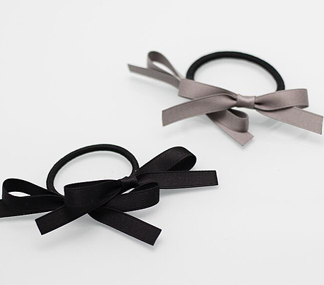
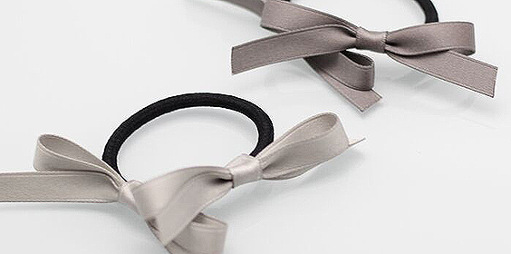

质感·品格
在这个技术被过分强调的年代，手作之物的温度又将人们带回到共有的过去。 冰冷的工业化，温暖的手工艺，就像安心享用的一份午餐，值得回味与细品。质感与美感交互，是“美男子家的蝴蝶结”一直试图展现的。 时至今日，我们仍不断地被那些过多的设计和无用的信息所包围、所轰炸，我们需要那些纯净至极的设计，来净化我们的视野。”
私人·定制
何谓定制？
定制，最早起源于1858的巴黎和平大街上英国人Charles Frederick Worth所开的专门为法国贵妇设计服装的店铺， 谢绝雷同是一种态度 时至今日，人们在追求潮流的同时也拒绝平庸，更排斥简单大批量的复制。 个性，独立，真实，甚至与众不同大受推崇。厌倦雷同，厌倦牵强，厌倦批量，厌倦浮夸，厌倦流水线，厌倦用自己微薄的生命去适应机械化、大批量的缺陷。 每个人都需要属于自己的身份号牌，标榜自我更是必不可少的一部分。相同的logo，雷同的面料、花色、甚至细节，让许多人避之不及。
店主对手工艺有着一言难尽的执着与坚持，“传统工艺在下方，高科技在上方，但总有一天会翻转”，这是“美男子家的蝴蝶结”品牌创立的初衷。 她也坚信，手工艺人的“手”和设计师的“脑”连接起来，才是产品的最大卖点，手工艺的精致与稀有成为其最大的闪光点。